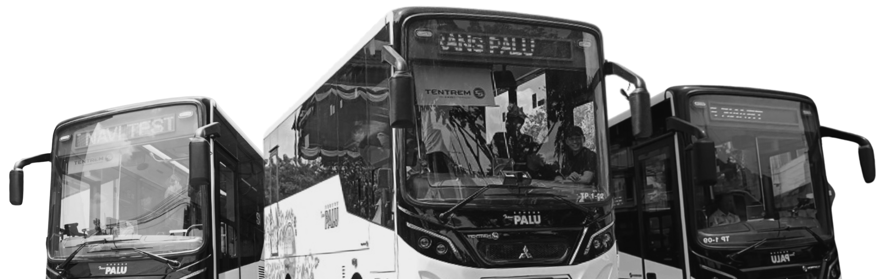
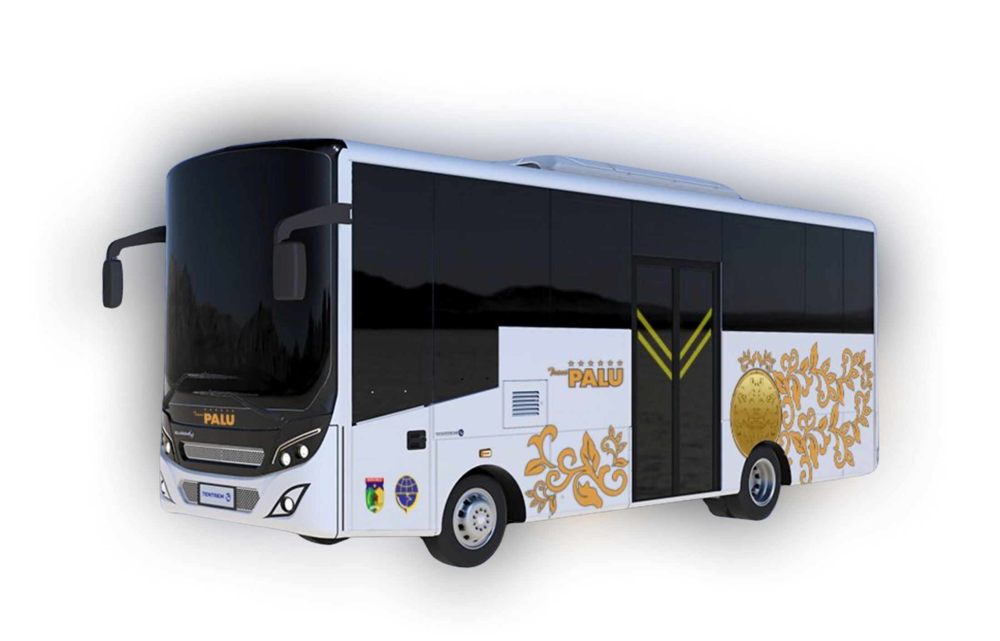

Gratis Hingga
DESEMBER
1/12/2024

Gratis Hingga
DESEMBER
1/12/2024
Seputar dan Informasi Bus Kota
RUTE INTEGRASI 4 KORIDOR

01
Pantoloan - Pusat Kota
02
Balai Kota - Pasar Manonda
03M
Pusat Kota - Bandara MSA
03Y
Pusat Kota - Bandara MSA
04
Bandara MSA - Terminal Tipo
Tampilan Bus Kota Palu
Spesifikasi Bus Kota Palu
Bus Trans Palu, yang dioperasikan oleh PT Bagong Transport melalui sistem Buy The Service (BTS), memiliki kapasitas 35 penumpang dengan 21 kursi duduk dan body mobil berwarna putih dengan aksen livery corak daun kuning keemasan di samping. Bus ini dilengkapi layar videotron di bagian belakang dan melayani empat koridor dengan 50 titik pemberhentian. Pemerintah Kota Palu hanya menyiapkan halte dan bus stop, serta membayar per kilometer untuk setiap bus yang beroperasi. Selama masa percobaan dari Oktober hingga Desember 2024, penumpang dapat menikmati layanan ini tanpa biaya.
KAPASITAS
35 DENGAN 21 KURSI
WARNA
PUTIH & AKSEN EMAS
KORIDOR
BUS STOP
50 TITIK BUS STOP
01
Pantoloan - Pusat Kota
02
Balai Kota - Pasar Manonda
03M
Pusat Kota - Bandara MSA (via Wolter Monginsidi)
03Y
Pusat Kota - Bandara MSA (via Moh. Yamin)
04
Bandara MSA - Terminal Tipo
Layanan Pelanggan
Percakapan Baru